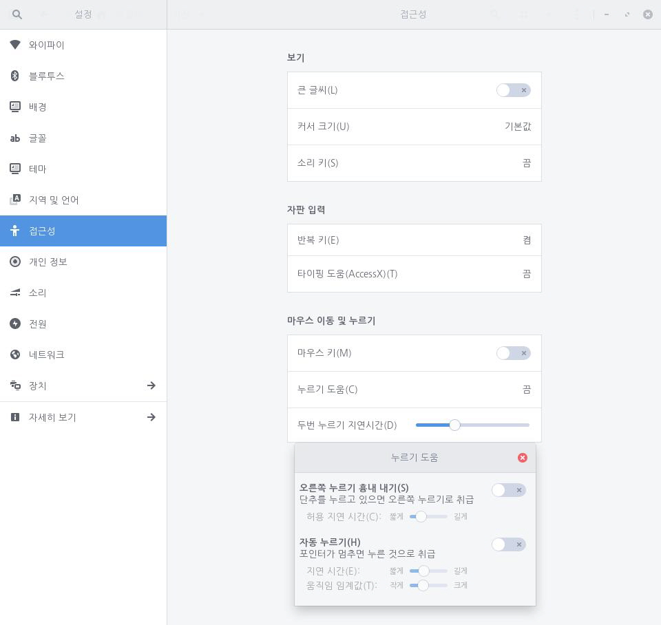

마우스 포인터를 일정 시간 가만히 두는 경우 이를 클릭 또는 끌기 동작으로 인식하여 실행하도록 설정할 수 있습니다. 마우스 단추를 누르거나 움직이는 것을 동시에 하기 힘든 사용자가 유용하게 사용할 수 있습니다. 해당 설정을 '호버 클릭(Hover Click)' 또는 '드웰 클릭(Dwell Click)'이라 부릅니다.
다음 단계를 수행하여 자동 누르기를 설정합니다.
1. 좌측 하단의 [시작]

아이콘을 클릭하고 검색 창에 "설정"을 입력한 후 [설정] 애플리케이션을 실행합니다.


2. [설정] 애플리케이션 사이드 바에서 [접근성]을 클릭합니다.


3. [마우스 이동 및 누르기] 아래에서 [누르기 도움]을 클릭합니다. 나타난 화면에서 [자동 누르기] 설정 단추를 오른쪽으로 밀어 켭니다.

또한 [지연 시간] 슬라이더를 사용하여 마우스 멈춤 시간을 원하는 대로 설정할 수 있습니다. [움직임 임계값] 슬라이더를 사용하여 마우스가 움직이더라도 멈춘 것으로 취급할 수 있는 정도를 설정할 수 있습니다.
마우스 포인터 모양의 내부가 차오르는 것을 확인하여 자동 누르기가 적용되는 시간을 확인할 수 있습니다. 마우스 포인터가 끝까지 차오르면 자동 누르기가 적용됩니다. 약간의 마우스 움직임은 [움직임 임계값] 설정에 따라 멈춘 것으로 취급합니다.